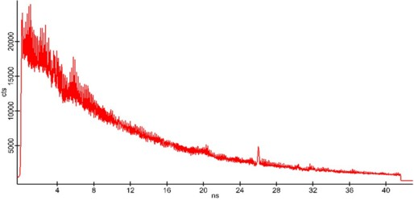
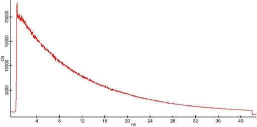

|
参数
|
安装样品或使用参考样品进行调整，并按照样品聚焦中的步骤操作。
适当的激发激光功率

图1：来自参考样品的"未校正"时间光谱示例
时间光谱仪参数
所有与记录时间光谱相关的参数都存储在相应的WITec Control配置中。如果设置不正确，可能会发生以下情况：
如果看到上述情况之一，则必须优化时间光谱仪参数组中的参数：
时间通道数：1800
时间分箱：1
如果更改了WITec Control中"时间光谱仪"部分的任何参数，可能需要完全重复上一步的校准。
为所有经常使用的不同设置（例如不同的相关重复率）存储专用配置和校准是有意义的。

图2：校正后的时间光谱
更多信息：